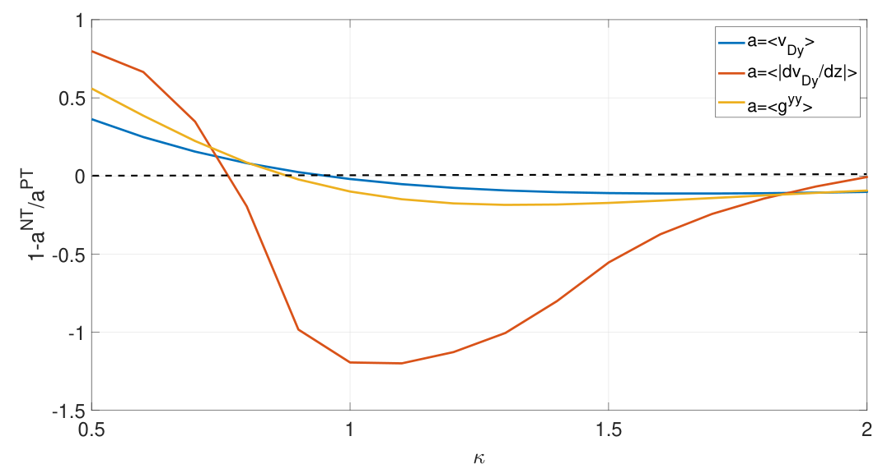
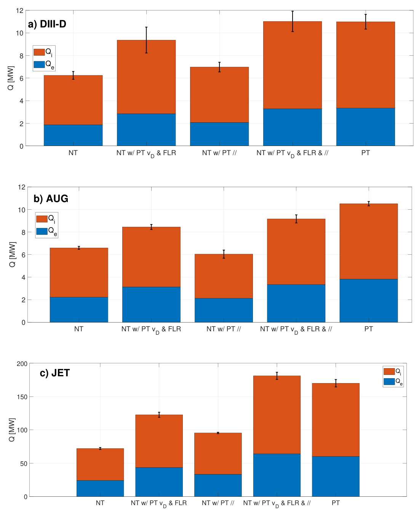

几何代理的实验检验：负三角形与拉长比
Validation of geometric proxies using negative and positive triangularity plasmas with varying elongation on TCV and multi-machine gyrokinetic simulations
原文与出版信息 ↗ · 据用户提供版本整理；公式离线预渲染；原图为关键图精选，非全文翻译。
研究问题：负三角形并不自动意味着更低输运
负三角形（NT）在若干托卡马克中能保持无 ELM 的边界状态，同时获得接近 H 模的约束。但三角形变只是整个磁几何的一个标签：拉长比、磁剪切、径向形状变化及上下不对称都可能改变效果。本文不再只问“负三角形是否更好”，而是检验三个可从平衡直接计算的几何代理量，能否预测何时更好、何时优势消失，甚至反转。（原文第 1—2 页）
证据分三层：先用代理量预测拉长比扫描，再做 GENE 线性与非线性模拟及 TCV 实验检验，最后在 DIII-D、AUG、JET 的真实形状中交换几何系数，判断漂移、有限拉莫尔半径（FLR）效应和平行动力学各自的作用。最有价值的结果不是“再次观察到 NT 有利”，而是一个能给出反例并接受检验的物理框架。
三个代理量从哪里来？
局部回旋动理学方程中，磁几何主要通过磁漂移、回旋平均及沿场运动进入。GENE 使用场对齐坐标 ，分别对应径向、双法向和沿场方向； 取极向角。这里 是代码方程中双法向磁漂移的几何系数，完整粒子漂移还带有速度、磁矩与电荷等因子，不能把它直接当作所有粒子的同一个实际速度。（第 3—5 页）
回旋平均在傅里叶空间带来 ，而垂直波数由度规决定：
对于典型峰值接近 的模式，一阶近似保留 和 。相同 下，更大的 表示实际垂直尺度更短，粒子一次回旋采样更多场变化，平均后响应更弱。这里“FLR 更强趋于稳定”是所研究谱段的物理解释，不应扩展成任意 Bessel 函数参数下的严格单调定理。
作者采用外侧中平面附近的 Jacobian 加权平均，定义三个代理量：
积分范围是极向角约 ±1 弧度，反映 ITG/TEM 的气球模结构，并不是对整个磁面无差别平均。作者报告适度改变积分区间不改变主要趋势，但选择本身仍是一种模型化。按本文符号约定，更负的 、更大的 和 通常指向更强稳定作用。
磁漂移的解释不是“漂移越大永远越稳定”，而是漂移相对由抗磁驱动设定的波相速偏离有效共振；沿极向快速变化进一步削弱粒子与波的持续耦合。这个机制在所研究的常规大径比 ITG/TEM 条件中有效，之前的工作已提示紧大径比及纯 TEM 某些情形还受其他因素影响。
预测与数值检验：低拉长比让 NT 优势反转
起点是 TCV #68145 的 磁面，用 Miller 参数化重建；翻转三角形变及其剪切得到 PT 对照，再改变拉长比，并规定 。这是一条明确指定的局部几何扫描路径，不是保持所有全局实验约束的平衡演化。（第 6—7 页）
原文图 1 显示： 在 1—2 时三个指标总体有利于 NT，而在约 0.5—0.8 时预测 NT 更差。中间区间不能简单插值，因为平均漂移与 FLR 的 NT/PT 差异随拉长比变化较单调，但漂移沿极向变化的差异在 附近具有更明显结构。
两组测试都保留碰撞、电磁效应和动理学电子，且不是只有单一不稳定性的理想模型。TEM 基线的 、、；ITG 版本交换前两个温度梯度，并令 。两者 、、磁剪切为 1.6。（表 1）
线性谱与准线性权重先提供方向判断。原文式 (12) 写成
其中 是按外侧中平面电势幅值平方归一化的线性热流。 可能随形状改变，因此作者主要比较 的趋势，而不把它当成无需校准的绝对热流预测。
非线性扫描确认两种主导机制中都出现反转： 时 NT 热流更大， 时更小。这个约 0.75 的阈值属于本文扫描，不是普适临界拉长比。图 6 使用 ，负值才表示 NT 热流较低。NT 有利时，主要抑制 的输运；更低波数不一定同时降低，说明总热流改善不等于整个谱逐点稳定。（第 10—11 页）
TCV 实验验证到哪一步？
TCV 做了内壁限器位形的高拉长与低拉长 NT/PT 对照， 分别约 1.4—1.5 与 0.95；输入 ECRH 功率分 0.5 MW 和 1.0 MW 两级。在同一拉长比下，保持相同输入功率和加料条件，让密度、温度剖面自由响应。这里测的是约束的综合结果，和固定剖面模拟的控制方式不同。（第 11—15 页）
高拉长组 NT 的 与 约为 PT 的 1.5 倍，且 接近 1；低拉长组两者差别很小。高拉长下的改善主要体现为更高离子温度和密度。晚时 NT 性能下降与 NTM、随后 VDE 和破裂有关，不能把整段时序都归结为湍流形状效应。
实验确认的是优势在低拉长时消失，不是已经观测到 0.75 以下的反转。更低拉长的等离子体发生径向不稳定，无法稳定实现目标形状。低拉长实验中，漂移变化代理量仍对 NT 有利，但差距收窄，另两个指标已转向有利于 PT；这说明三个指标不能任取其一当作唯一判据。还应区分局部磁面拉长比与 LCFS 拉长比，不能把二者的数值阈值直接等同。
跨装置验证与系数交换
DIII-D 使用 NT #171421；AUG 使用 NT #43493，并以 PT #36157 的几何配合 NT 剖面；JET 使用 NT #105835，并构造翻转、对称化后的 PT 对照。AUG 的 和磁剪切也不同，因此不是只改变三角形变。上下不对称 AUG/JET 位形采用 Fourier 版本局部平衡，避免用一个含糊的三角形变概括全部几何。（第 15—20 页）
| 装置 | 把 PT 漂移与 FLR 系数换入 NT 后的热流增幅 | |
|---|---|---|
| DIII-D | 约 1.8 | 约 1.5 倍 |
| AUG | 约 1.6 | 约 1.3 倍 |
| JET | 约 2.1 | 约 1.6 倍 |
这些是选定参数集的非线性模拟结果，不是三台装置全域实验约束时间之比。只交换平行动力学，DIII-D 增幅更小、AUG 无显著变化、JET 约增加 1.3 倍；全部一起交换则接近恢复 PT 结果。JET 在线性增长率上平行动力学显得更重要，但非线性热流并不保留同样排序，这是不能用单个线性指标替代饱和输运的重要例子。（图 20—24）
系数交换是一种数值机制诊断，不必对应真实可实现的自洽平衡；因此它支持“哪些方程项主要负责差异”，不等于给各机制分配唯一可加的因果百分比。漂移与 FLR 在这里合并交换，表中数值也不能进一步拆成两项独立贡献。
关键原图精选
选取原文图 1、23，分别连接廉价几何预测与非线性机制检验；完整图组见原文。


结论边界与可迁移的研究方法
最稳健的结论是：三个有物理含义的廉价几何指标，在本文常规大径比的局部 ITG/TEM 场景中能预测形状优势的方向，并通过非线性及部分实验对照获得支持。它们还不是任意形状、任意湍流机制下的定量热流闭合模型。
- JET 无杂质模拟热流高于实验估计；加入铍后明显下降并更接近实验，杂质–几何耦合留待后续研究。
- AUG 的代理量在 暗示 NT 优势可能丢失，但作者明确未在如此靠近 LCFS 处验证模型。
- AUG/JET 没有完全匹配的实验 PT 对照，因此模拟差异不能直接冒充实验测得的 NT 增益。
- 从托卡马克迁移到仿星器时，坐标、俘获轨道、共振与模式局域结构均需重检；相似代理量思路不等于本文已经验证 QI 构型。
科研上值得复用的是流程：先让廉价指标产生可证伪预测，再做固定条件的高保真对照，最后用方程系数交换诊断机制。对任何 Stage-1 几何代理量，都应把“趋势预测有效”与“可精确替代昂贵目标”分开评价。
自测
- 为什么三角形变符号不足以预测输运，而 能补充实际波长的信息？
- TCV 实验验证了低拉长反转，还是只验证了优势消失？局部与 LCFS 拉长比有何区别？
- 为什么几何系数交换支持机制判断，却不能直接得到各机制独立贡献的百分比？